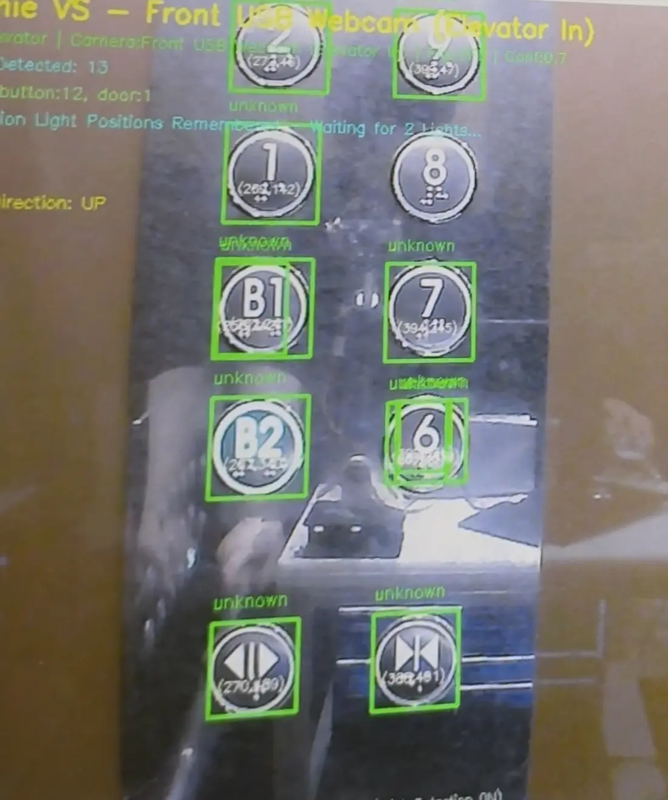

엘리베이터를 스스로 이용하는 서비스 흐름
ROOMIE는 엘리베이터 앞까지 자율주행한 뒤 외부 호출 버튼을 누르고 문 열림을 확인합니다. 탑승 후에는 내부 목적층 버튼을 조작하고, 층수 표시기의 OCR 결과로 도착을 판단한 다음 하차해 기존 배송·안내 임무를 계속합니다.

시스템 설계
투숙객은 Guest GUI에서 룸서비스를 주문하거나 목적지를 선택하고, 직원은 Staff GUI에서 주문을 확인한 뒤 픽업을 요청합니다. 요청은 Roomie Main Service를 거쳐 로봇에 할당되며, ROS 2 기반 Roomie Controller가 주행·비전·로봇팔·적재함 제어 모듈의 실행을 연결합니다.

인식 결과를 물리 동작으로 연결한 Arm Controller
4명으로 구성된 팀에서 Vision Service가 버튼을 검출한 이후부터 로봇팔이 조작 명령을 마치고 ROS 2 Action 결과를 반환할 때까지의 Arm Controller를 담당했습니다.
버튼 검출
좌표계 변환
4-DOF IK
ACK · 예외 처리
Success · Abort
담당 범위에는 버튼 중심과 크기를 이용한 거리 추정, Forward Kinematics와 Hand–Eye Calibration을 이용한 좌표계 변환, 4축 역기구학, 반복 PBVS, ESP32 모터 제어와 오류 처리가 포함됩니다. GUI와 팀 전체 기능을 나열하기보다 저비용 로봇팔의 불확실성을 실제 동작으로 연결한 과정에 집중했습니다.
약 5만 원대 로봇팔과 2D 카메라라는 제약
사용한 교육용 4축 로봇팔은 본체 기준 약 5만 원대였으며, Depth Camera 대신 일반 2D 카메라를 장착했습니다. 제한된 예산 안에서 빠르게 프로토타입을 제작할 수 있었지만 다음 문제가 발생했습니다.
2D 영상은 버튼의 픽셀 위치를 제공하지만 카메라와 버튼 사이의 거리를 직접 측정하지 못합니다.
접근 방향과 관절 하중에 따라 같은 명령각에서도 로봇팔 끝단 위치가 달라졌습니다.
팔을 펼친 상태에서는 버튼 반력을 이길 힘이 부족했고, 접촉 후 프레임이 밀리거나 휘었습니다.
Encoder와 Force Sensor가 없어 관절의 실제 각도와 버튼 접촉력을 직접 측정할 수도 없었습니다. 따라서 소프트웨어가 보정할 수 있는 위치 오차와 하드웨어 교체가 필요한 힘의 한계를 분리해 접근했습니다.
2D 검출 결과를 로봇 기준 3차원 목표로 바꾸기
Vision Service는 엘리베이터 버튼의 검출 박스와 중심 위치를 제공합니다. 기본 실행 경로인 normal 모드에서는 실험 대상 버튼의 대표 지름을 35 mm로 설정하고, 화면상 버튼 크기와 카메라 내부 파라미터를 이용해 깊이를 근사했습니다.

버튼의 실제 지름 D, 영상에서의 버튼 너비 Wpx와 초점거리 fx로 깊이 Z를 근사하고, 버튼 중심 픽셀 (u, v)를 카메라 기준 (X, Y, Z)로 변환합니다. 이 방식은 Depth Camera 없이 동작하지만 검출 박스 크기와 촬영 각도에 민감하다는 한계가 있습니다.
네 기준점이 제공되는 경우에는 solvePnPRansac으로 카메라 기준 Pose를 구하는 corner 경로도 구현했습니다. 다만 공개 저장소의 기본 설정은 중심과 크기를 이용하는 normal 모드이며, PnP를 기본 시연 결과로 설명하지 않습니다.
현재 명령 관절각의 Forward Kinematics, Hand–Eye Calibration과 OpenCV–로봇 좌표축 보정을 적용해 카메라 기준 버튼 위치를 로봇 베이스 기준 목표로 변환했습니다.

4축 IK로 계산한 목표를 실제 로봇과 RViz에서 확인하기
변환된 목표 위치는 ikpy 기반 4관절 역기구학으로 계산했습니다. 현재 관절각을 초기값으로 사용하고, 계산 결과를 Forward Kinematics로 다시 검산해 수치 잔차가 1 mm를 넘거나 관절 제한을 벗어나면 이동을 실패 처리했습니다.
여기서 1 mm는 IK 수치해의 허용 잔차이며 실제 로봇팔 끝단의 절대 정확도가 아닙니다. 실제 위치에는 백래시, 프레임 변형과 명령각–실제각 차이가 추가됩니다.
임의 자세에서 시작하자 정확도가 크게 떨어졌다
초기 구현에서는 로봇팔이 어떤 자세에 있는지와 관계없이 버튼을 검출하고 목표를 계산했습니다. 하지만 기준 자세에서 벗어난 상태에서는 관절 하중과 백래시 방향이 달라지고, 명령각 기반 FK와 실제 끝단 위치의 차이도 커졌습니다. 같은 버튼을 바라보더라도 시작 자세에 따라 도달 위치의 재현성이 현저히 떨어졌습니다.
이를 개선하기 위해 ClickButton 요청을 받으면 버튼을 바로 누르지 않고, 먼저 사전에 정의한 관측 자세로 이동하도록 순서를 변경했습니다.
요청
기준 자세 통일
버튼 재관측
Press · Retreat
관측 자세에서는 카메라가 버튼을 비교적 일정한 조건에서 바라보고, 로봇팔의 관절 하중과 접근 방향도 매 요청마다 비슷하게 만들 수 있습니다. 이 변경이 백래시 자체를 제거하지는 않지만, 제어가 매번 다른 기계적 조건에서 시작하는 문제를 줄였습니다.
백래시를 없애는 대신 이동 중간에 다시 관측하기
현재 로봇팔에는 Encoder가 없어 ROS 2가 사용하는 관절각은 실제 측정값이 아니라 마지막 명령값입니다. 따라서 한 번의 위치 계산으로 버튼을 바로 누르지 않고, 이동 사이에 버튼을 다시 관측하는 외부 시각 피드백 루프를 구성했습니다.
move_to(OBSERVE_POSE)
repeat:
detection = request_button_pose()
p_button = transform_to_robot_base(detection)
p_standby = p_button - 80 mm × button_normal
error = p_standby - FK(commanded_joint_angles).position
if norm(error) < 2 mm:
break
move_at_most(30 mm toward p_standby)
observe_again()
press_forward(100 mm)
retreat()
한 번에 최대 30 mm만 이동한 뒤 버튼 위치를 다시 계산했습니다. 이를 통해 이전 이동에서 발생한 백래시, 프레임 유격, 깊이 근사와 Calibration 오차가 다음 이동에 간접적으로 반영됩니다. 다음 이동량이 5 mm보다 작으면 저가형 서보의 실제 분해능과 백래시를 고려해 불필요한 미세 반복을 중단했습니다.

이는 관절 Encoder 기반의 내부 폐루프 제어가 아니라, 카메라로 목표 위치를 반복해서 갱신하는 외부 시각 피드백입니다. 현재 IK는 위치만 구속하고 End-effector 방향은 최적화 조건에 포함하지 않으므로 완전한 6D Pose 제어로 설명하지 않습니다.
버튼 누르기 동작과 물리적 한계
정렬이 끝나면 버튼 앞 80 mm 준비 위치에서 버튼 방향으로 100 mm 전진하고 같은 준비 위치로 후퇴합니다. 아래 영상은 개발용 버튼 패널에서 이 누르기 동작을 시험한 기록입니다.

버튼 위치까지 이동해 접촉하더라도 실제 버튼을 활성화하려면 버튼 반력을 이길 힘이 필요했습니다. 그러나 팔을 펼친 상태에서는 서보모터의 유효 토크가 감소했고, 버튼을 누르는 순간 저가형 프레임과 관절 연결부가 밀리거나 휘었습니다. 위치 정렬이 성공해도 실제 버튼이 눌리지 않는 경우가 발생한 이유입니다.
실제 버튼 활성화 성공률 3/10
개발 당시 10회의 버튼 조작 테스트에서 실제 버튼이 활성화된 경우는 3회였습니다.
이 수치는 로봇팔이 목표 위치로 이동한 비율이나 IK 정확도가 아니라, 버튼이 실제로 눌려 입력이 활성화된 비율입니다. 당시 실험에서는 위치 정렬 실패와 접촉 후 힘 부족을 별도 수치로 기록하지 않았기 때문에 두 원인의 비율까지 주장하지 않습니다.
실패를 분석하면서 다음 두 문제를 분리했습니다.
- 위치 문제
- 2D 깊이 근사, 시작 자세, 백래시와 프레임 변형으로 End-effector가 버튼 중심에서 벗어났습니다.
- 힘의 문제
- 버튼에 접촉해도 모터 토크와 프레임 강성이 부족해 버튼 반력을 이기지 못했습니다.
정지 진동을 완화하고 제어 주기를 분리하기
초기 등속 제어에서는 목표 각도에 도달할 때 팔끝이 떨리거나 동작이 끊기는 현상이 나타났습니다. ESP32에서 오차함수 기반 Gaussian 누적 프로파일로 시작각과 목표각을 보간하고, 마지막 스텝에서는 목표각을 직접 기록했습니다. 이는 실제 시연에서 관찰한 급격한 움직임을 완화하기 위한 변경이며, 진동 감소량을 정량 측정한 결과로 설명하지 않습니다.
- Motion Task
- FreeRTOS 태스크를 한 코어에 고정하고 6 ms 주기로 네 개 서보의 목표각을 갱신합니다.
- Communication Task
- 별도 코어에서 시리얼 입력을 처리해 명령 수신이 모션 제어 주기를 막지 않게 했습니다.
- 완료 확인
- 460800 baud로 명령을 전송하고 ESP32의 완료 ACK를 받은 경우에만 다음 동작으로 전환합니다.
- 예외 처리
- Vision 응답, IK, Serial timeout과 중복 요청을 각각 ROS 2 Action 실패로 반환합니다.
다음 개선 — 물리 한계와 정렬 오차를 따로 해결하기
모방학습은 정렬 오차를 줄일 수 있지만 부족한 모터 토크를 만들 수는 없습니다. 따라서 다음 개선도 두 단계로 나눴습니다.
1. 실제 버튼을 누를 수 있는 하드웨어 확보
- 더 높은 토크의 서보모터
- 휨이 적은 프레임과 짧은 링크
- 버튼 표면에 수직으로 접촉하는 End-effector
- 접촉 반력을 흡수하는 스프링 구조
- Force Sensor 또는 마이크로스위치를 이용한 접촉 확인
- 관절 Encoder를 이용한 실제 관절각 피드백
2. 2D 카메라 기반 모방학습 보정
성공한 버튼 조작 과정의 카메라 영상, 관절 상태와 보정 이동량을 수집해 다음 이동을 예측하도록 학습하고 싶습니다. 완전한 End-to-End 제어보다 현재의 기하학 기반 PBVS가 계산한 이동량에 학습된 잔여 보정값을 더하는 방식을 우선 고려합니다.
Joint Command
Δp
Δplearned
Arm Command
이 구조에서는 작업 공간, 관절 제한, 최대 이동량, FK 검산과 Action 오류 처리는 기존 제어기가 유지하고, 학습 모델은 저가형 하드웨어에서 반복적으로 남는 위치 오차만 보정합니다. 개선 후에는 현재의 실제 클릭 성공률 3/10을 기준선으로 동일한 조건에서 비교할 계획입니다.
이 프로젝트에서 확인한 것
처음에는 버튼 위치를 정확히 계산하면 로봇팔이 버튼을 누를 수 있을 것으로 생각했습니다. 실제 구현에서는 위치 추정, 관절 제어와 접촉력이 서로 다른 문제였습니다.
소프트웨어에서는 시작 자세를 관측 자세로 통일하고, 한 번의 계산을 신뢰하지 않고 이동 중간마다 버튼을 다시 관측하도록 개선했습니다. 그러나 최종 버튼 활성화 성공률은 3/10에 머물렀고, 모터 토크와 프레임 강성은 소프트웨어만으로 해결할 수 없는 물리적 한계임을 확인했습니다.
저비용 하드웨어의 실패를 단순한 위치 오차로 숨기지 않고, 인식·제어·접촉력 문제로 분리해 분석했습니다.